11回目
東京ビッグサイト
Blockchain EXPO
今後の活躍が期待されるMidnightと共同出展しました。
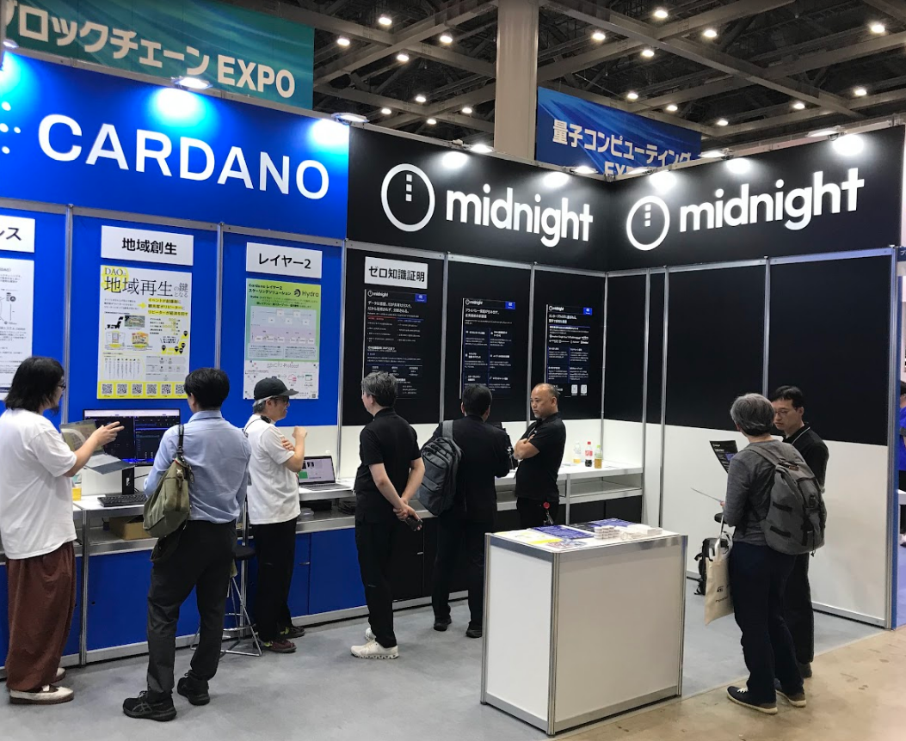
Journey / Activity
2021年から2026年まで展示活動を行い、Web3から一般企業や官公庁まで幅広くCardanoを紹介しました。
東京ビッグサイト
今後の活躍が期待されるMidnightと共同出展しました。

幕張メッセ
国内のカルダノイベントが続き、海外コミュニティが多数来られました。
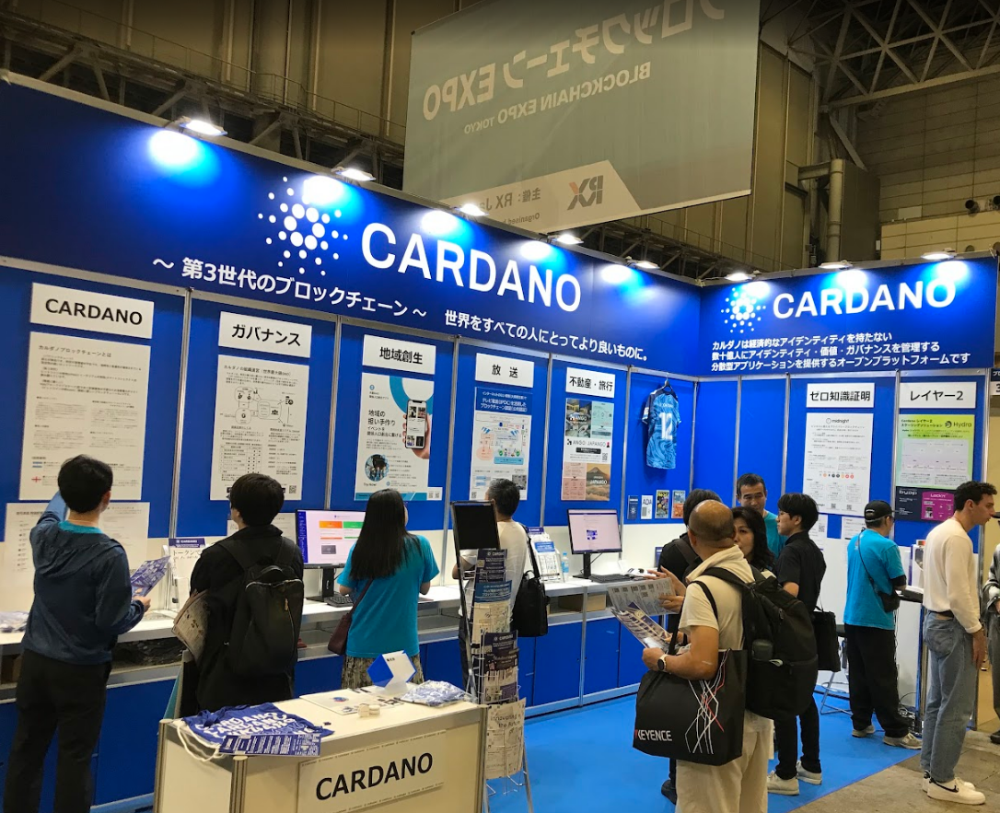
東京ビッグサイト
DAOや地方創生の展示が注目を浴びました。
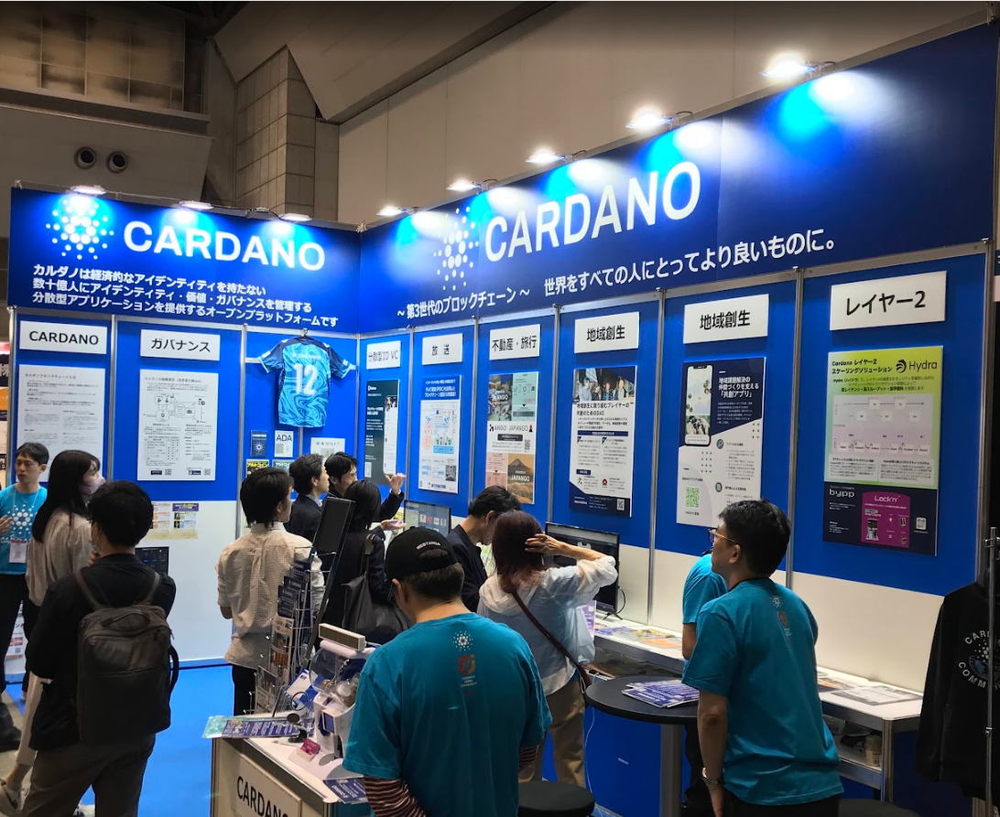
幕張メッセ
新興のプロジェクトやアプリを多数紹介しました。
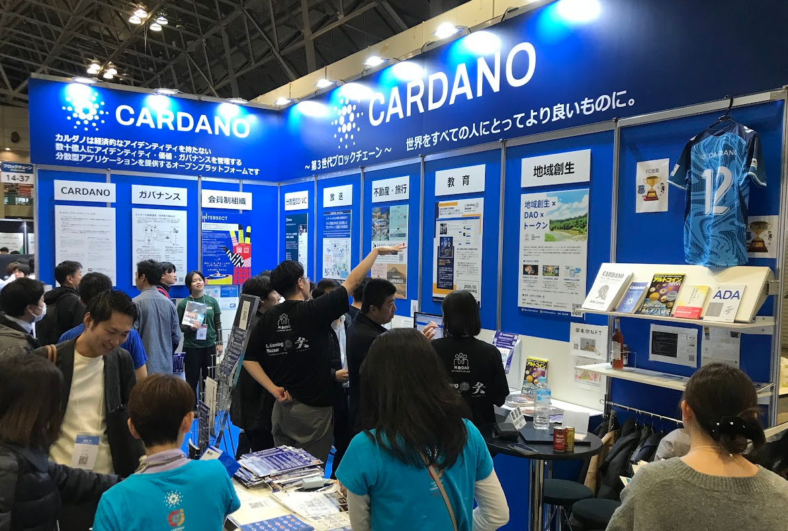
東京ビッグサイト
インターセクトや発刊の続いたカルダノ関連本を紹介しました。
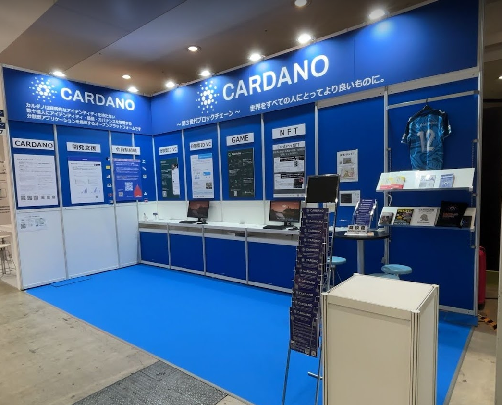
東京ビッグサイト
新たな展示会に参加し、これまでとは違う層へアピールしました。
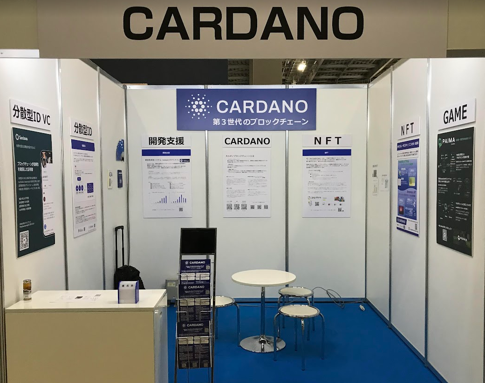
幕張メッセ
ADA価格の下落により、小規模出展に切り替えました。
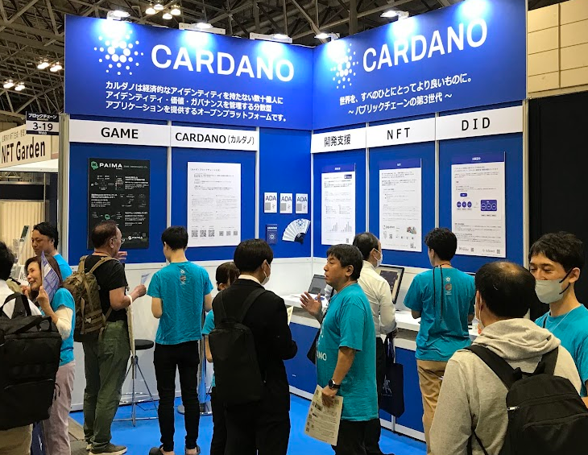
東京ビッグサイト
Emurgoにもチームとして参加頂きました。
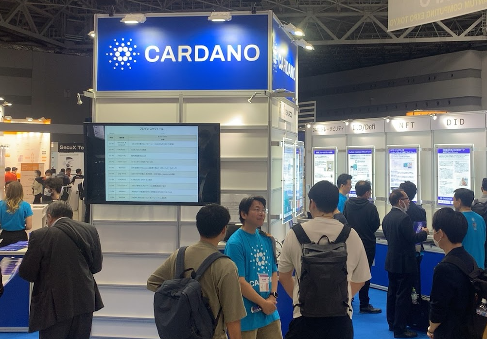
幕張メッセ
採用を重視して、アプリの紹介に重点を置きました。
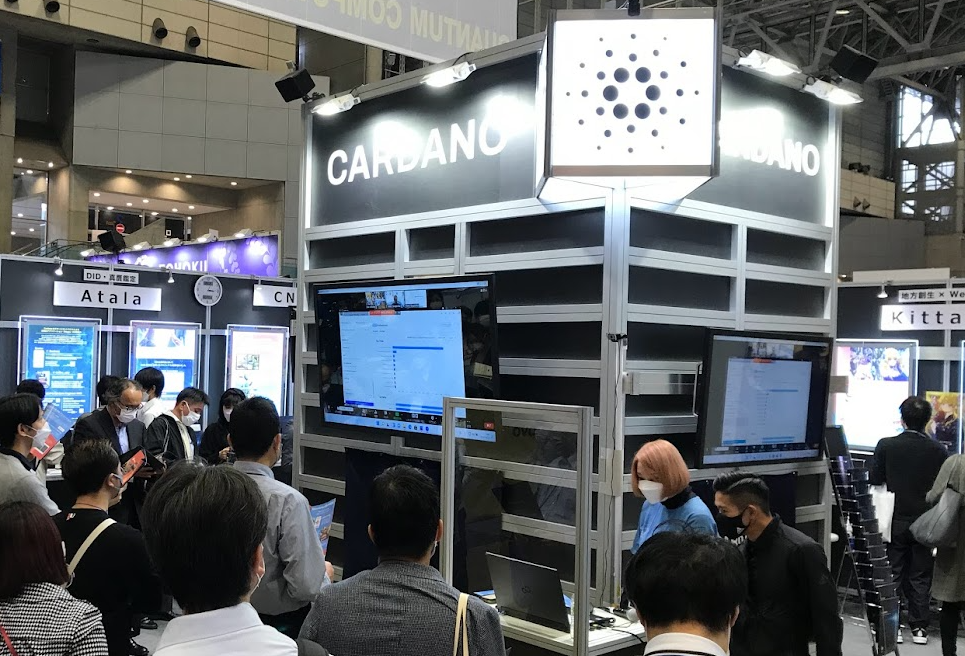
東京ビッグサイト
多くの方に参加、ご支援頂き、一番盛り上がったブースになりました。
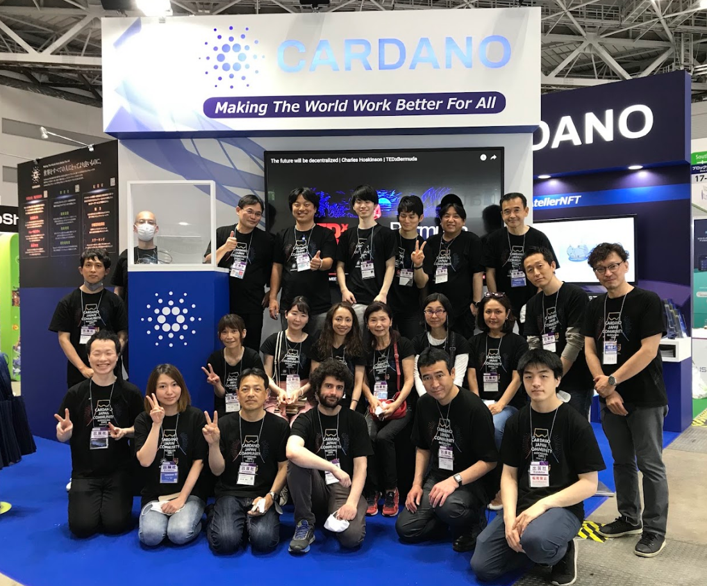
幕張メッセ
多くの応援を頂き実施できました。チャールズのリモート講演も実現。
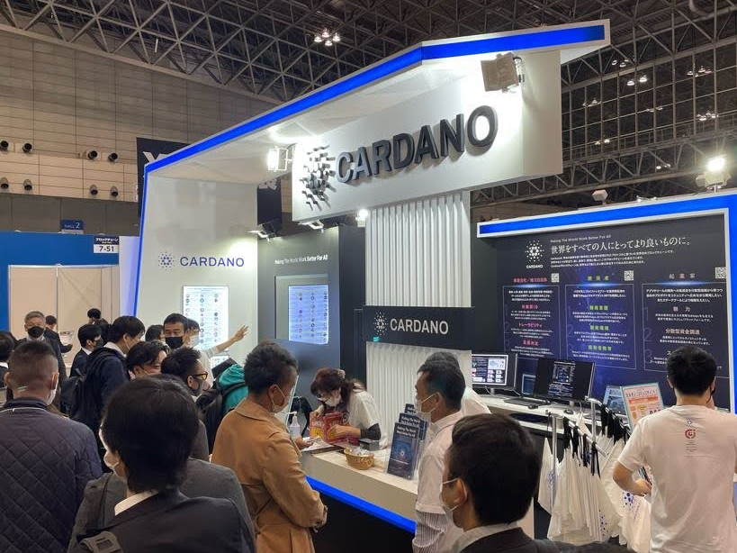